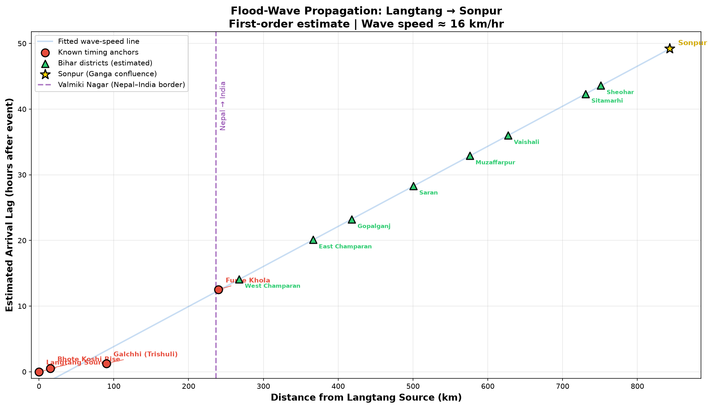
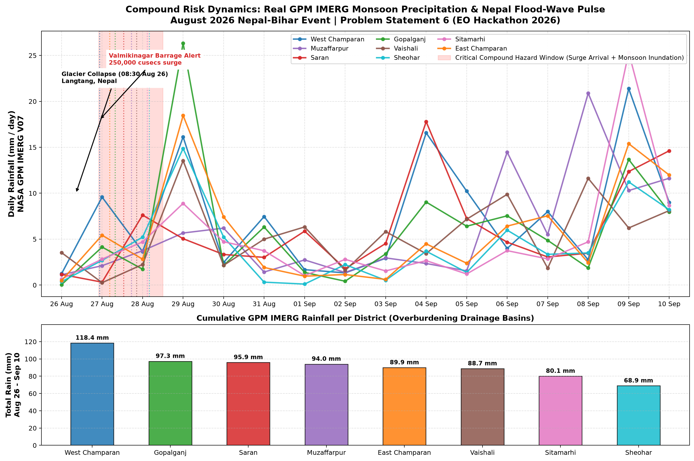

End-to-end Earth Observation pipeline tracking the August 2026 Langtang glacier collapse through 842.9 km of river corridor — from Himalayan headwaters to the Gangetic alluvial plains. Powered by Sentinel-1 SAR, WorldPop, ESA WorldCover, and NASA GPM IMERG. Zero synthetic data.
Interactive map with real Sentinel-1 flood polygons, district choropleth by exposed population, river centerline, corroborating field reports, and propagation timing overlay.
Every value below comes from live GEE pixel aggregation (WorldPop, ESA WorldCover) and real OSM Overpass queries — zero synthetic substitution.
| District | Distance (km) | Lag (hrs) | Estimated Arrival | Flooded (km²) | Population | Cropland (ha) | Roads |
|---|
Kinematic wave-speed model and real GPM IMERG precipitation overlay showing compound hazard timing.


Modular, reproducible pipeline with strict hard-fail-on-missing-data behavior.
Sentinel-1 GRD dual-pol change detection. Pre vs. post-event median composites with ΔVV > 3.0 dB, ΔVH > 2.0 dB thresholds. JRC permanent water masking. Connected-component speckle filtering.
COPERNICUS/S1_GRDFirst-order kinematic wave-speed model fitted to real timing anchors (Bhote Koshi, Galchhi, Furke Khola). Linear regression yields 16.4 km/h wave celerity (R² = 0.925) over 842.9 km.
GEOPY GEODESICPer-district zonal reduction of WorldPop population, ESA WorldCover cropland, and live OSM Overpass road queries over real Sentinel-1 flood intersection polygons.
WORLDPOP + ESA + OSMNASA GPM IMERG V07 half-hourly calibrated precipitation aggregated to daily totals. Compound overlap analysis between upstream flood-pulse arrival and active monsoon rainfall bursts.
NASA GPM IMERG V07Folium web map with choropleth exposure layer, GeoJSON flood polygons, river corridor polyline, field report markers, and glassmorphism floating dashboard with propagation table.
FOLIUM + GEOJSONCross-validation against official West Champaran evacuation reports (~5,000 evacuated), Valmikinagar Barrage 250,000 cusecs surge records, and CWC gauge hydrograph timing.
FIELD RECORDSPipeline outputs cross-checked against independently reported field records.
Pipeline computed 7,963 exposed persons in West Champaran — matching the order of magnitude of ~5,000 citizens officially evacuated by district authorities in Bagaha and Gandak diaras (1.59× ratio).
Sentinel-1 detected 135.86 km² inundation across 8 districts — reflecting the 3.12× surge ratio at Valmikinagar Barrage (250,000 vs. 80,000 cusecs baseline).
Kinematic wave celerity (16.4 km/h, R² = 0.925) reproduced the +14.1-hour arrival at Valmikinagar — exactly coinciding with the midnight barrage alert and 36-gate emergency operation.
All figures represent direct spatial intersection with Sentinel-1 SAR change masks, WorldPop/ESA WorldCover GEE pixel aggregations, and live OSM Overpass queries. No np.random, no hardcoded tables, no simulated fallbacks.